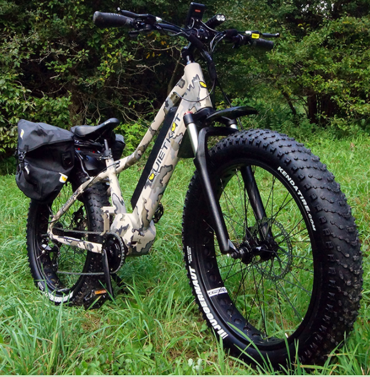

Wonderful Designs for Comfortable Hiking
In this website, we seek to study and Review a number of motorized Bikes. E-bikes bring a lot of undeniable advantages to the table. Being able to serve as a reliable means of transportation without relying on gas is almost always a welcome advantage for most motorists. Considering the ballooning prices of petrol, you cannot really be surprised by the growing number of people who are switching to e-vehicles. And that is arguably just the tip of the iceberg benefits-wise.
Compared to a standard bike, electric bikes usually cost three-fold, especially the high-end models. And this is only expected to increase with time. Costs because of a battery replacement are included in this as well. Since most standard e-bike batteries can only run for 2-3 years or so, this can really take a toll on your finances in the long run. In the following article we therefore delve into a number of high-end E-bikes and Summarize their qualities.
SONDORS FOLD X

The Sondors Fold X, especially in matte black. While a bike like the RadMini might actually be a better and more utilitarian appliance, the Fold X is styled so much better. The hidden, frame-installed battery and the ultra styled frame are absolutely superior to any of the Rad Power bikes. It's a cruiser. Don't be mistaken, this is not a hardcore commuter. Going 20 plus miles on this bike is absolutely murder on your body. It's just not shaped right to allow for long seat times. It's way better on the boardwalk and cruising downtown.
The bike itself features some cool functionality. The major selling point is that it folds. It shrinks so much in size when folded. It will absolutely fit in a regular car. It's about 60 pounds so it's pretty heavy but it's manageable.The bike LCD screen is able to display basic information such as MPH, an overall odometer and some other metrics that might be useful. Also, the battery locks inside the body. It comes with its own key. An average thief would have an absolute conniption trying to steal your battery.
JETSON METRO FOLDING
With so many places to go, you need a ride reliable enough to get you there, and compact enough to store it with you. The Metro electric folding bicycle is easy wheelin’ to fit your needs. It rides comfortably as a bike with some boost, brings more speed with a twist throttle feature, and folds up easily to be put away wherever you go.
But there are upsides too. The whole bike is super lightweight without a bunch of heavy bike components like pedals, cranks, chain, chain ring, cassette, derailleur, etc. Plus, you don’t have to worry about maintaining or adjusting those parts, and there are fewer things to break. And with fewer bike parts, the price of the Jetson Bolt can come down without sacrificing the quality of the electrical components.
NAKTO SKYLARK
This is One of the most compact, affordable electric city bikes on the market. This bike is a perfect commuter for urban workers. The Skylark will get you up to 18 miles per charge which cover the majority of the urban commuters looking for a fast, fun and efficient way to get to work. The Nakto Skylark 36V 10 ah battery can be charged in 4-6 hours which makes it easy if you need to charge your bike on the go or at work. Nakto has been known to make the batteries easily accessible for riders to take the battery out and charge.
There are more needs than there is money, and you don’t want to end up with the sour grapes experience of having to sell your bike for junk six months after buying it. What you buy has got to be worth every dollar. Our bikes come standard with high strength carbon steel that can comfortably carry a load of 110kgs without crumbling. That’s not all. Our bikes boast of superior car paint that is sure to take the harsh vagaries of our weather without peeling off or fading. With proper maintenance, our bikes will comfortably give you a service of 5 years while in excellent condition. Nakto offers a one year warranty against manufacturing defects.
QUITEKAT 750

One of the smallest e-bikes currently manufactured by QuietKat, the QuietKat 750 Bandit Folding Frame Electric Bike is an ideal combination of portability and power. With both a folding steering column and a folding frame mechanism, the QuietKat Bandit can be reduced to just a fraction of its original size. Unlike many folding bikes, the QuietKat Bandit folding frame electric bike retains the strength and durability that has become synonymous with the QuietKat range of off-road electric bikes.
The QuietKat Ambush 750 LT is built on a solid, one-piece Aluminum frame. It includes an 8-gear Shimano shifter, mechanical brakes, and has a top speed of 19 mph – although I hit low 20’s during my review. The bike sports two 26” fat tires that absorb the shock and abuse found on off-road trails. I tested this bike in mud, sand, and gravel, and it traversed them easily. The bike contains a small gear motor that sits between the pedals. That motor is powered by a 48v Lithium-Ion battery. The power supplied to that motor is adjustable. Using a convenient power switch on the handlebar, you can set the bike power from 1 to 5, with 5 being the maximum power applied.
EMOJO 500
The E-mojo bike has been manufactured using an aluminum alloy frame that offers an amazingly high-strength, making it perfect for rides on tough terrains. Disc brakes by Tektro ensure extreme stopping power and precise braking so you can enjoy riding at maximum speed. Fat tires have a wide surface area that covers a large surface of the road, creating a better grip.
The E-Mojo 500W Lynx PRO electric bike is powered by DC brushless motor, which delivers increased efficiency, more torque per watt, reduced noise, longer lifespan, increased reliability, etc. The 4.0 R 20 Kenda fat tires of the bike offer better control and increased balance on tricky snowy and muddy roads. The strong grip of fat tires on the streets will make your journey smooth and risk-free. With the 500-watt electric motor, your bike gets a quick boost and climbs the steep uphills smoothly. The dual disc brakes at the front and the rear wheel ensures that you have a complete over the bike even if you ride the bike at its top speed.